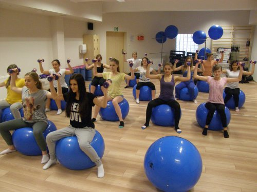
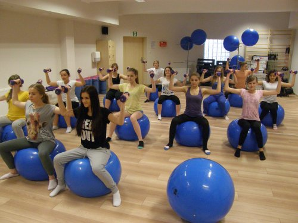

I Liceum Og贸lnokszta��c��ce im. Filomat贸w Ziemi Micha��owskiej liczy 20 oddzia��贸w, do kt贸rych ucz��szcza obecnie 505 uczni贸w.
I LO w liczbach:
- liczba uczni贸w-505, w tym:
- dziewcz��t: 341
- ch��opc贸w: 164
- liczba oddzia��贸w: 20
- liczba nauczycieli-58, w tym:
- kobiet: 40
- m��偶czyzn: 18
- liczba pracownik贸w administracyjnych i obs��ugi: 29
- powierzchnia u偶ytkowa budynku szko��y: 3997 m2
- Liczba sal lekcyjnych-35, w tym:
- dwie sale komputerowe
- laboratoria j��zykowe
- 33 klasopracownie wyposa偶one w sprz��t multimedialny
Ponadto w I LO znajduje si��:
- centrum informacji naukowej i biblioteka
- laboratorium j��zykowe
- strzelnica
- aula na 500 miejsc
- sala gimnastyczna
- sala fitness
- si��ownia
- izba tradycji
- radiow��ze��
- kawiarenka szkolna
Oferta edukacyjna
Nauczyciele
- Katarzyna Boba
- Katarzyna Boi��ska
- El偶bieta Brzezicka-Pruchi��ska
- Mi��osz Bzowy
- Anna Chmarzy��ska
- Iwona Czupry��ska-Kaliszewska
- Anna ��wikli��ska
- Lucyna Domeracka
- Bernadeta Dukat
- Wies��awa Frankowska
- Marlena Gierszewska
- S��awomir Gulczy��ski
- Marta Jamro偶y
- Iwona Janiszewska
- Adam Kaczmarek
- Paulina Kalinowska-Willmann
- Renata Kami��ska
- Katarzyna Karska
- Arkadiusz K��osowski
- Mateusz K��osowski
- Marcin Ko��odziejski
- Miros��awa Kowalska
- Maciej Koz��owski
- Anna Kwa��niewska
- Krystyna Kwintal
- Piotr Lendzi��ski
- Adam Lewandowski
- ks. Pawe�� Lewandowski
- Wojciech Lisicki
- Dorota Lisowska
- Wies��aw ��upina
- Marzena ��upi��ska
- Anita Ma��kowska
- Arkadiusz Nag贸rski
- Beata Nijakowska
- Ma��gorzata Paw��owska
- Joanna P��k
- Milena Pier贸g
- Jolanta Piotrowska
- Justyna Pniewska
- Danuta Przybylska
- Monika Puc
- Anna Radomska
- Magdalena Rogowska
- Pawe�� Roszak
- Anna Rumi��ska
- Marta Sarnowska
- Maria Skorupka
- Andrzej Sobiechowski
- Krystyna Tomasz
- Tomasz Wardowski
- Izabela Wierzchowska
- Ewa Wi��niewska
- Lech Witkowski
- Hanna W贸dka
- Jakub Zakrzewski
- Wojciech Zembrzycki
- Agnieszka Zi贸��kowska
- Justyna Zubowicz
- Ilona Zwierzchlewska
- Dorota 呕mijewska
Tradycje szko��y
Izba tradycji
Izba Tradycji I LO im. Filomat贸w Ziemi Micha��owskiej w Brodnicy to wyj��tkowe miejsce, gdzie mo偶na przenie���� si�� w czasie i dowiedzie�� si�� o historii naszej szko��y. W Izbie Tradycji znajduj�� si�� ciekawe eksponaty, takie jak stare zdj��cia, dokumenty i sprz��ty szkolne, kt贸re przypominaj�� o dawnych czasach. Mo偶na zobaczy��, jak wygl��da��a szko��a przed laty i jak zmienia��a si�� na przestrzeni lat.R贸偶yczkowanie
"R贸偶yczkowanie" to najwi��ksza tradycja I LO w Brodnicy, si��gaj��ca histori�� do pocz��tk贸w istnienia szko��y. R贸偶yczki otrzymuj�� absolwenci, kt贸rzy zdali matur��.
Sport w naszej szkole
 

Nasza szko��a posiada doskonale wyposa偶on�� si��owni�� oraz hal�� sportow��, gdzie mo偶esz trenowa�� i rozwija�� swoje umiej��tno��ci sportowe. Ponadto oferujemy tak偶e zaj��cia fitness, dzi��ki kt贸rym mo偶esz utrzyma�� form�� i poprawi�� swoj�� kondycj��.
W I LO ka偶dy ucze�� ma mo偶liwo���� wyboru sekcji na lekcjach wychowania fizycznego. Dzi��ki temu mo偶esz rozwija�� si�� w wybranej dziedzinie sportu, a tak偶e prze偶y�� wiele niezapomnianych chwil.
Nasza kadra nauczycielska to do��wiadczeni trenerzy oraz instruktorzy, kt贸rzy zawsze ch��tnie pomog�� i doradz�� w kwestiach zwi��zanych z treningiem i rozwojem sportowym.